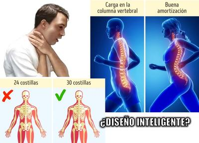

Desde hace mucho tiempo los creyentes han repetido con arrogancia que el ser humano es “la obra maestra de la creación”, hecho a imagen y semejanza de “Dios” (Génesis 1:27), o incluso “que Dios hizo perfecto al género humano” (Eclesiastés 7:29, Nueva Versión Internacional, NVI). Y es que si la Biblia dice que “Dios” es perfecto (Mateo 5:48), ¿cómo podría él crear obras imperfectas? Y menos aquellos seres que hizo con la intención de que fueran semejantes a él.


Pero además, según Génesis 1:26–29, toda la naturaleza —los mares, los cielos y las bestias— habría sido diseñada y creada para nuestro uso y placer. El universo entero —dicen— gira en torno a nosotros, los “reyes de la creación” … Sin embargo, la Biblia NO DICE LA VERDAD. La biología, la astronomía y la pura observación de la realidad, se encargan de desmontar tan tremendo delirio de grandeza: nosotros no somos el centro de nada, y mucho menos el producto de un “Diseño Inteligente”. Somos solamente el resultado imperfecto, azaroso y fascinante, de millones de años de evolución.
Si el cuerpo humano fuera realmente la obra de un ingeniero celestial, merecería ser despedido por incompetente. Charles Darwin, desde el primer capítulo de “El origen del hombre” (Descent of Man), identifica varias partes de nuestro cuerpo como inútiles o casi inútiles; pero ahora sabemos que se quedó corto. Empecemos por los ojos, tan admirados por los teólogos del siglo XVIII como prueba de perfección.
El ex fraile dominico y biólogo evolutivo Francisco José Ayala Pereda (1934-2023), nos explica que el nervio óptico humano atraviesa la retina, provocando un punto ciego. Los calamares, en cambio, no tienen ese defecto: su nervio llega por detrás del ojo. Y entonces, si se supone que somos la especie favorita del creador, y la más perfecta, ¿por qué no fueron nuestros ojos los más perfectos del reino animal?
Pero la lista de imperfecciones continúa: mencionemos como un simple ejemplo el vello corporal. Si bien es cierto que sirvió para proteger del clima a los humanos primitivos, ¿por qué todavía lo tenemos? ¿Y qué se puede decir de los pezones masculinos? ¿Para qué sirven? Claro, ahora sabemos que son un recordatorio de que el embrión humano comienza su desarrollo sin sexo definido.
Pero también está el coxis, un vestigio de una cola que ya no tenemos, aunque se dan casos todavía de bebés que nacen con cola. Pero es solamente un residuo de nuestro proceso evolutivo, heredado de muchos de nuestros parientes mamíferos… ¿Y qué tal las famosas “muelas del juicio”? Ese par de piezas dentales inútiles e incómodas, que tiene actualmente un 5% de la población. El espacio de nuestra boca no es suficiente para ellas. ¿Por qué mejor “Dios” no nos diseñó una dentadura que fuera completamente resistente a los alimentos que mordemos y masticamos, de tal forma que nunca se dañara por caries o por algún otro motivo? ¿O por qué mejor no nos diseñó una dentadura que pudiera regenerarse cada vez que se extrajera o se perdiera alguna pieza, como ocurre a los tiburones? Simplemente porque las “muelas del juicio” son reliquias de nuestro pasado herbívoro, cuando nuestras mandíbulas no tenían su forma actual, y nuestros antepasados necesitaban masticar plantas para obtener sus nutrientes.
Mencionemos también la decimotercera costilla en cada lado del tórax, la cual un 8% de la población humana comparte con los chimpancés y los gorilas. Hoy nuestros científicos opinan que deberíamos tener todavía más costillas para proteger nuestros órganos internos. No 12 por cada lado, es decir, 24 en total, como tenemos actualmente, sino más bien unas 30 en total, 15 por cada lado. ¿Y qué dicen de los dedos de los pies? Bueno, aunque provienen de una estructura básica que heredamos de los tetrápodos, su forma actual, especialmente la del dedo gordo, es el resultado de cambios graduales que facilitan el bipedismo, al proporcionar estabilidad y propulsión.
¡Ah, claro!, también tenemos el apéndice, ese pequeño saco inútil que tantas veces nos quita la vida. Se trata de un fósil anatómico de tiempos en que nuestros antepasados fermentaban vegetales como lo hacen los conejos… Y bueno, la lista de nuestros “defectos de diseño” es extensa: el músculo palmar largo, que va desde la muñeca hasta el codo; los músculos arrectores pili, que erizan el pelo ante situaciones de amenaza; los músculos de las orejas, que deberían servir para moverlas (y muy pocas personas lo hacen); el músculo piramidal, que es triangular y está en la parte baja del abdomen, y el cual hay personas que no lo tienen, mientras otras tienen dos; el tercer párpado, que es un pliegue en la esquina interna del ojo, parecido a las membranas que tienen aves y reptiles.
Pero no olvidemos uno de los diseños menos inteligentes de todos: compartir la entrada de aire y comida por la misma vía. Gracias a este detalle, miles de personas fallecen cada año atragantadas. Las serpientes, en cambio, pueden respirar mientras tragan sus presas. Sin embargo, los defectos del cuerpo humano son más, al grado de que Francisco José Ayala opinaba: “Nada está bien hecho.” Y mencionaba otro ejemplo: “El canal de natalidad provoca que el veinte por ciento de los embarazos terminen en aborto espontáneo […] debido al mal diseño del sistema reproductivo.” Y de esto concluía: “Si el cuerpo humano fuera obra de un ingeniero, ya estaría despedido”.
Y es que el canal de parto humano es un auténtico desastre: demasiado estrecho para el tamaño del cráneo del bebé. Lo cual provoca que el parto sea peligroso y doloroso, y que una gran proporción de embarazos terminen en aborto espontáneo. ¿Es esa la obra del “Dios perfecto” que aborrece el aborto? La evolución, en cambio, explica el fenómeno: cuando la especie humana se volvió bípeda, la pelvis se estrechó para facilitar la marcha erguida, mientras que el cerebro crecía en volumen. Resultado: una adaptación a medio camino entre éxito y tragedia.
Así que si “Dios” diseñó todo esto, definitivamente se equivocó varias veces. Y es que de hecho el dios judeocristiano, según la misma Biblia, se equivoca, y hasta se arrepiente de lo que hace. Por tanto, es un dios que comete errores (Génesis 6:6, Génesis 1:31, Éxodo 32:14).
Ahora, desde el punto de vista de la evolución, cada una de esas “imperfecciones” tiene una explicación más simple y elegante: No se trata de errores de un inexistente diseñador, sino de vestigios de un proceso histórico. Porque la evolución no construye desde cero: recicla lo que ya existe. Por eso nuestro esqueleto, nuestro sistema nervioso, y hasta nuestro cerebro, están llenos tanteos, de soluciones improvisadas, como una casa vieja a la que se le han añadido cuartos nuevos sobre los cimientos originales.
Pero más grave que las falacias anatómicas es el mito moral que la religión construyó sobre ellas. Según el Génesis, el ser humano no sólo fue creado “a imagen de Dios”, sino también para “señorear” sobre todas las criaturas. Una frase que ha servido durante siglos como licencia para la explotación: la tala indiscriminada de bosques, la domesticación forzada de especies, la contaminación de ríos y océanos, y la idea de que los demás seres vivos existen únicamente para nuestro provecho.
Desde la perspectiva evolutiva en cambio, el ser humano no es dueño de nada. Es sólo una rama más del árbol de la vida, más bien una especie reciente, con apenas unos cientos de miles de años sobre un planeta que lleva 4.500 millones girando alrededor de una estrella común, en una galaxia promedio entre cientos de miles de millones. Somos producto del mismo proceso que formó las amebas, los hongos y los delfines. No hay propósito ni jerarquía en la naturaleza, sólo relaciones ecológicas y adaptaciones temporales.
Nosotros en nuestra arrogancia nos creemos la cúspide de una creación que nunca ocurrió, pero no somos más que un accidente biológico en un pequeño planeta, orbitando una estrella corriente en un rincón mediocre de la Vía Láctea. Y, sin embargo, esa soberbia nuestra nos ha llevado a destruir ecosistemas enteros, a alterar el clima y a exterminar miles de especies, convencidos de que “Dios nos dio dominio” sobre la Tierra. Pero si algo demuestra la ciencia, es justo lo contrario: que dependemos de los otros seres vivos, de sus ciclos, de sus equilibrios, y que nuestro futuro está ligado al de ellos.
En fin, el mito del “Diseño Inteligente” no sólo es falso desde el punto de vista biológico: es éticamente peligroso. Alimenta la idea de que somos especiales, que la Tierra fue hecha para nosotros, y que, por tanto, tenemos derecho a usarla hasta agotarla. La ciencia en cambio, nos devuelve a nuestro verdadero lugar: somos una especie más, efímera y frágil, pero eso sí, capaz de comprender el universo sin necesidad de inventar dioses.
[Godless Freeman]
https://es.scribd.com/document/709480417/La-naturaleza-inacabada-Francisco-J-Ayala-z-lib-org
https://www.bbc.com/mundo/noticias-46922542
https://deserpientes.net/anatomia-del-sistema-respiratorio-de-la-serpiente/
Comentarios
Comments powered by Disqus